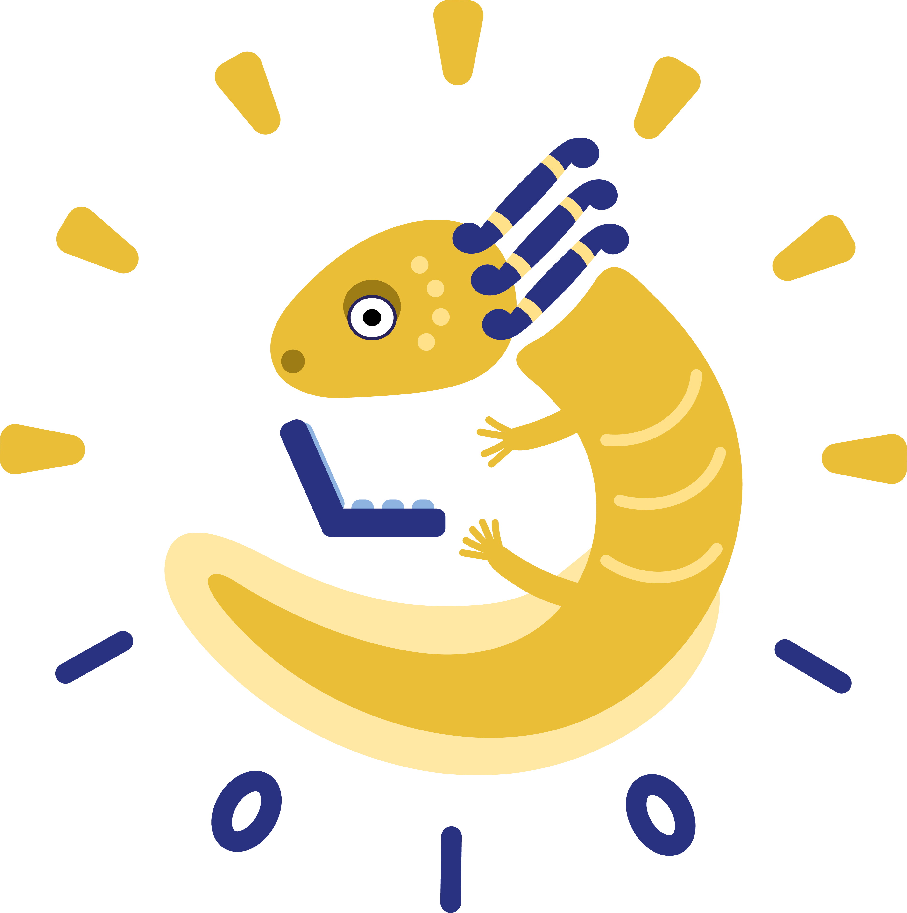

Del perceptrón a las redes neuronales
Guillermo Barrios
2025-05-24
Del Perceptrón a las redes neuronales
live coding en Google Colab para entender las redes neuronales.
Paper de Rosenblatt
{kind=link}
Detalle ampliado
{kind=link}
Invierno de la IA (1974–1980)
El informe Lighthill de Sir James Lighthill (enero de 1973), encargado por el Consejo de Investigación de Ciencias del Reino Unido, concluyó que los avances reales de la IA estaban muy por debajo de lo prometido y recomendó retirar la mayor parte de los fondos estatales a proyectos en este campo.
¿Qué es un perceptrón
- Unidad de procesamiento inspirada en la neurona biológica.
- Clasificador binario: decide si una entrada pertenece a una clase u otra.
- Propuesto por Frank Rosenblatt en 1957.
Esquema del perceptrón

Perceptrón
\(z = \mathbf{w}^\top \mathbf{x} + b\)
\(h(z) = \begin{cases} 0, & z < 0,\\ 1, & z \ge 0, \end{cases}\)
\(y = h\bigl(\mathbf{w}^\top \mathbf{x} + b\bigr)\)
\(\text{error}=Y−y\)
\(\Delta w_i = \mathrm{LR}\,\bigl(Y - y\bigr)\,x_i\)
Manual de uso de un perceptrón
Inicializar
Iterar por épocas
Para cada ejemplo de entrenamiento
- Calcular la salida del perceptrón
- Calcular el error
- Actualizar los pesos y sesgo
- Calcular la salida del perceptrón
Devolver pesos y el sesgo ajustados
Puerta lógica AND
Puerta lógica XOR
AND: Perceptrón en Google Colab
XOR: Perceptrón en Google Colab
AND y XOR
{kind=link}
AND y XOR
{kind=link}
Backpropagation y Redes Neuronales
| Año | Investigador | “Nombre” de la contribución |
|---|---|---|
| 1970 | Seppo Linnainmaa | Reverse-mode AD |
| 1974 | Paul Werbos | Back-prop en redes |
| 1982 | John Hopfield | Interés en redes neuronales |
| 1986 | Rumelhart-Hinton-Williams | Back-prop popularizado |
Backpropagation + Multicapa
| Paso | Perceptrón simple | Multicapa (+ back-prop) |
|---|---|---|
| Activación | Escalón (h) – no derivable |
Sigmoide – derivable |
| Capas | 1 (entrada → salida) | 2 (entrada → oculta → salida) |
| Aprendizaje | Regla de perceptrón | Gradiente descendente con retro-propagación |
| Puede aprender XOR | ❌ | ✅ |
Multicapas
Back-propagation: cómo aprende una red
- Calcula el error en la salida.
- Propaga ese error hacia atrás usando la regla de la cadena para obtener la pendiente (gradiente) de cada peso.
- Combina los gradientes con descenso del gradiente (u otro optimizador) para actualizar los parámetros.
- Permite entrenar cualquier grafo computacional compuesto de operaciones derivables.
XOR: Red neuronal en Google Colab
Playground TensorFlow

https://playground.tensorflow.org/
